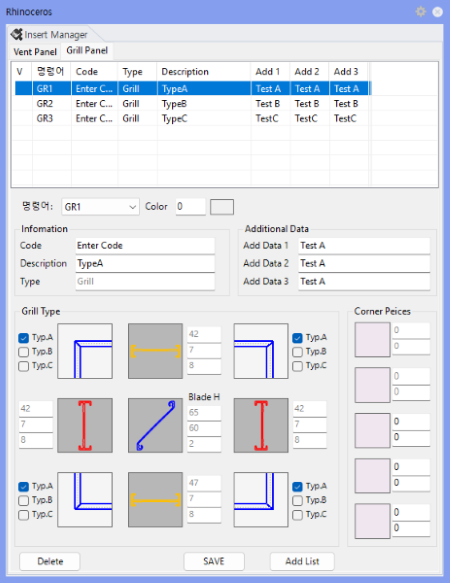

GrOpt
그릴 타입 옵션 패널(Grill Type Option Panel)을 열거나 닫습니다.
패널이 열려 있는 경우 명령어를 다시 실행하면 닫힙니다.
그릴 타입(사용 섹션·블레이드 조건·코드·설명 등)을 미리 정의·수정하는 옵션 패널을 열 때 사용합니다. 여기서 설정한 타입 1~5가 GR1~GR5 그릴 생성의 기준이 되므로, 그릴 모델링 전에 타입을 정리하는 용도입니다.

| 항목 | 설명 |
|---|---|
| 명령어 타입 | GR1 ~ GR5 중 모델링에 사용할 Grill 타입 번호를 지정합니다. |
| 프레임 섹션 | Left, Top, Right, Bottom 위치에 사용할 단면 그룹을 지정합니다. |
| Blade 섹션 | Grill 내부에 반복 배치할 블레이드 단면 그룹을 지정합니다. |
| 코드/설명 | 수량 리스트와 테이블에 출력될 Code, Description, Add1~Add3 정보를 입력합니다. |
| 명령어 | 설명 |
|---|---|
| GR1 ~ GR5 | 그릴 모델링 — 옵션 설정 후 실행합니다. |
| GrNo | 그릴 번호 부여 |
| GrList | 그릴 수량 리스트 생성 |